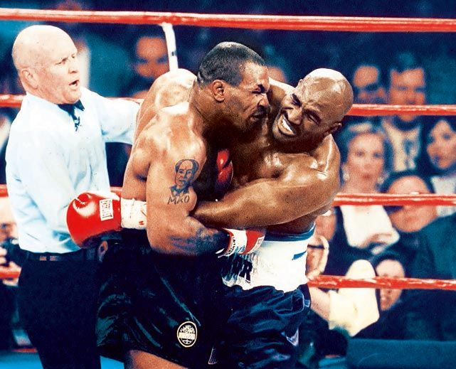
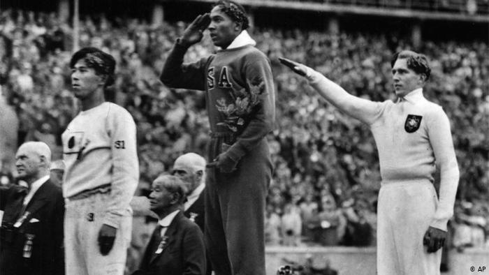
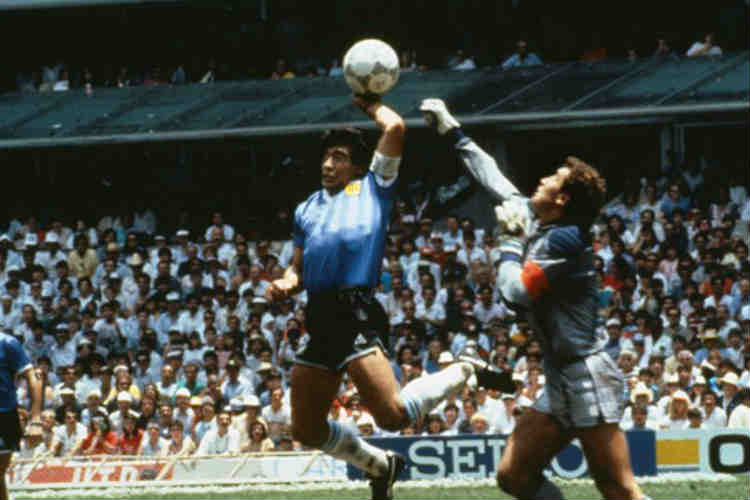
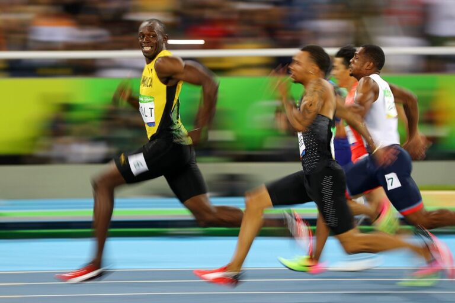
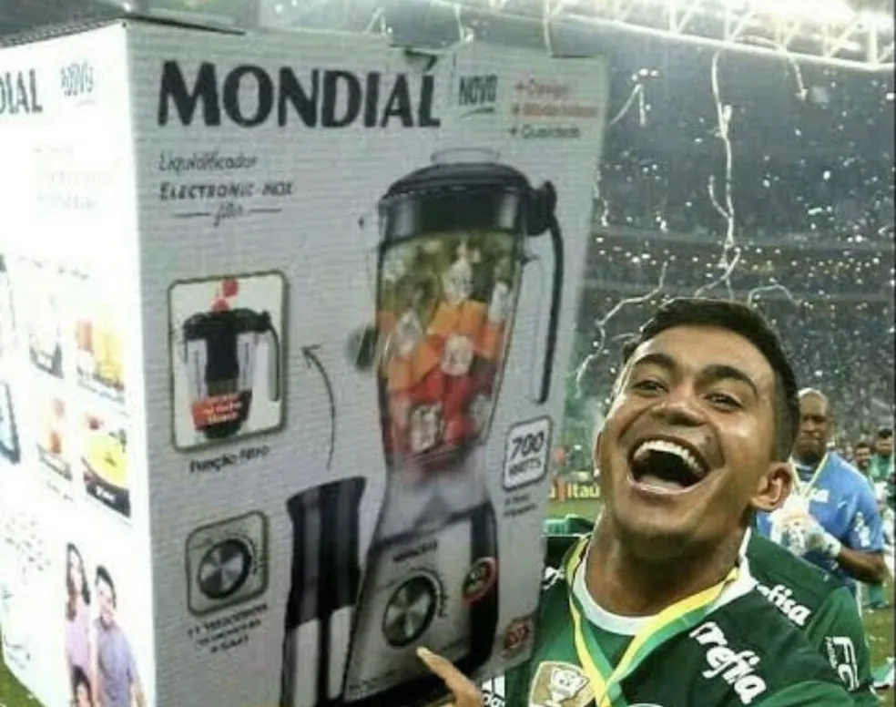
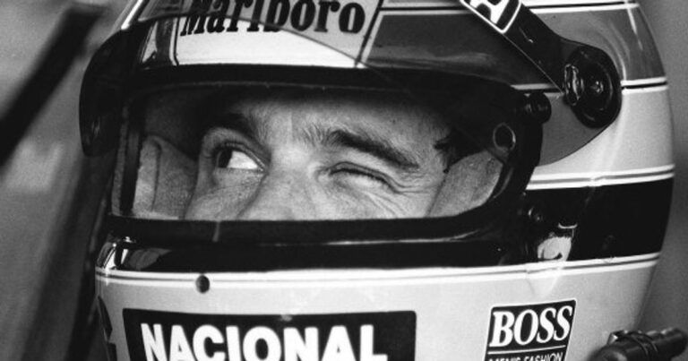

Momentos emblemáticos dos esportes
Confira algumas fotos tiradas em momentos emblemáticos que ficaram na história.

Holyfield vs Tyson
Um dos momentos mais inacreditáveis do esporte aconteceu no dia 28 de junho de 1997, quando dois dos maiores pugilistas do momento, Evander Holyfield e Mike Tyson, se enfrentaram. Tyson buscava revanche contra Holyfield, que havia ganhado por nocaute técnico no seu primeiro embate, um ano antes. Valendo novamente o cinturão da WBA dos pesos médios, a luta foi paralisada no terceiro round por conta de uma MORDIDA de Tyson na orelha de Holyfield, que foi obviamente desclassificado, tendo sua licença para lutar temporariamente revogada

Jesse Owens contra Hitler
Os Jogos Olímpicos de 1936 aconteceram em Berlim, na Alemanha. Um ano antes do início da terrível Segunda Guerra Mundial, o mundo já estava em ebulição. Hitler tentou usar o movimento olímpico para enaltecer o seu doentio ideal da supremacia da “raça ariana”. Ele não esperava que um americano negro o humilhasse publicamente, vencendo as provas mais nobres do atletismo.
Jesse Owens terminou a competição com quatro medalhas de ouro. Na foto que ficou para a história, um desses pódios, durante a execução do hino norte americano.

A mão de Deus
O dia 22 de junho de 1986 ficou marcado na história do futebol. Um gol em que ele ṕarte da defesa e dribla quase todo o time para decidir o jogo já seria o suficiente, mas o que ocorreu antes disso foi mais marcante: um gol marcado de mão: a “Mão de Deus”.
Obviamente a malandragem dele não foi honesta, mas é inegável que o lance marcou a história do futebol. Nas lentes do fotógrafo, o momento inegável do lance.

Usain Bolt olhando seus concorrentes enquanto corre
O jamaicano Usain Bolt, 8 vezes campeão olímpico, marcou sua passagem no atletismo com um domínio impressionante, batendo recordes sem aparentar fazer muito esforço. Uma foto que exemplifica bem isso foi batida durante a semifinal dos 100m rasos. O fotógrafo pegou o momento em que Bolt “dá uma olhadinha” para ver a distância dele para os adversários, mas não aparentava estar se esforçando muito, como os demais

Mundial do Palmeiras
Um grande título conquistado pelo Palmeiras...
Só que não, o Palmeiras nunca ganhou e nunca vai ganhar o Mundial de clubes HAHAHAHA!

A piscada de Ayrton Senna
No dia 26 de março de 1989, data do GP do Brasil de Fórmula 1 daquela temporada, foi registrada pelo fotógrafo Evandro Teixeira uma das famosas piscadelas de Senna para o chefe da McLaren Ron Dennis antes das corridas.
Explore o Mundo dos Esportes!
Navegue pelas páginas e descubra mais sobre as modalidades que movimentam o mundo.
Voltar ao início